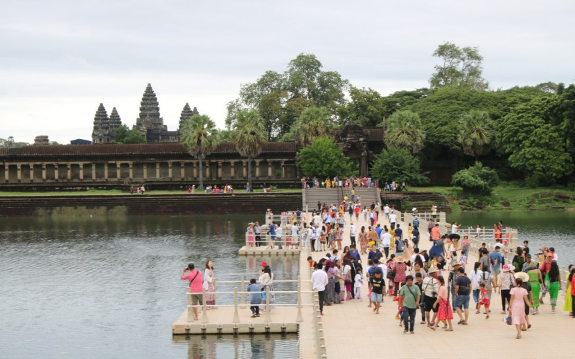

Siem Reap Province is basically the cradle of Angkorean civilization and it is a province that offers plenty of opportunity to tourists enthralled by the Khmer culture.
The ruins of Angkor, located amid forests and Farland, are now a UNESCO World Heritage Site. There are over one thousand temples ranging in scale from nondescript piles of brick rubble scattered through rice fields to the magnificent Angkor Wat which is said to be the world’s largest single religious monument. There are dozens of temple ruins in the Siem Reap area and it depends largely on how much time one has and one’s level of interest to determine how long one should spend to explore them.
This province is accessible on direct flights from many major cities in the region including Bangkok, Danang, Hanoi, Ho Chi Minh, Paksé, Vientiane, Kuala Lumpur, Singapore, Hong Kong, Kunming, Taipei, Manila, etc. From the capital of Phnom Penh, the Cambodia National Airline operates direct flights daily to and from Siem Reap.
Siem Reap Province can also be reached by speedboats along the Tonlé Sap from Phnom Penh and Battambang Province.